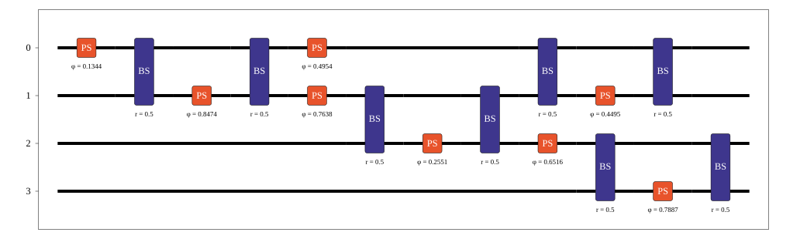

Simulator#
The Simulator class is used to find the probability amplitudes of different states for a given input state. This means the expected output from a given input can be calculated precisely. It can be useful to do this as it enables a better understanding of the exact quantum state evolution, and also is much quicker/more accurate than sampling many times to find the output distribution.
To demonstrate the usage of the Simulator, we will first configure a Circuit for testing. To do this, we will add an arrangement of randomly configured Mach-Zhender interferometers, which acts as tuneable beam splitter, and include some additional phase shifters on one arm of the system.
from random import random, seed
circuit = lw.Circuit(4)
seed(1) # Set random seed so circuit is reproducible
for m in [0, 1, 0, 2]:
circuit.add_ps(m, random())
circuit.add_bs(m)
circuit.add_ps(m+1, random())
circuit.add_bs(m)
circuit.display()

The Simulator can then be created, this requires the created circuit from above.
sim = emulator.Simulator(circuit)
To retrieve probability amplitudes from the system the simulate method should then be used. At minimum, this requires the input(s) are specified and the target outputs cannot be specified. If the target outputs are not specified, then all possible outputs with photon number matching the input photon number will be calculated. This introduces the condition that all inputs and outputs provided by a user must have the same photon number, if this is not the case then two separate calls to simulate must be made.
To find the probability amplitude between then input \(\ket{1,1,0,0}\) and output \(\ket{0,0,1,1}\), the code required would therefore be:
input_state = lw.State([1,1,0,0])
output_state = lw.State([0,0,1,1])
results = sim.simulate(input_state, output_state)
This will return a SimulationResult object, the raw data of which can be accessed with the array attribute.
print(results.array)
# Output: [[0.0375234-0.25889121j]]